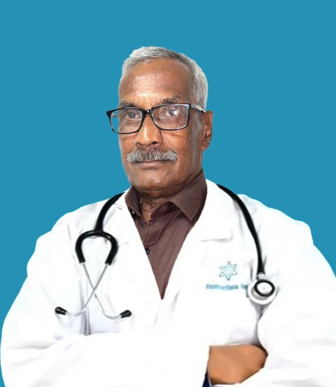
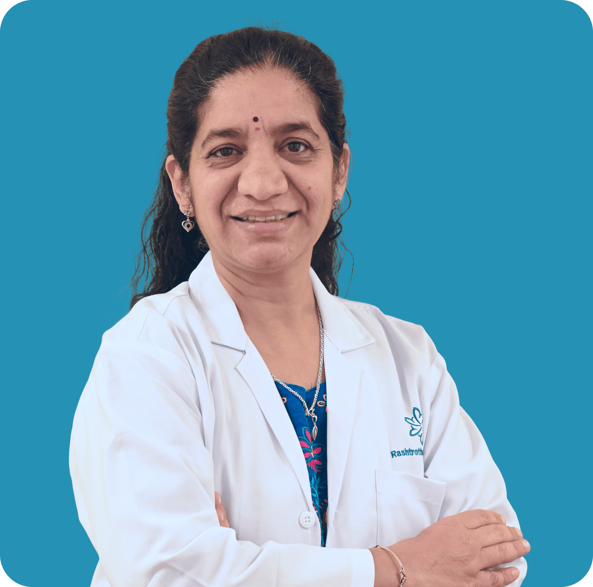
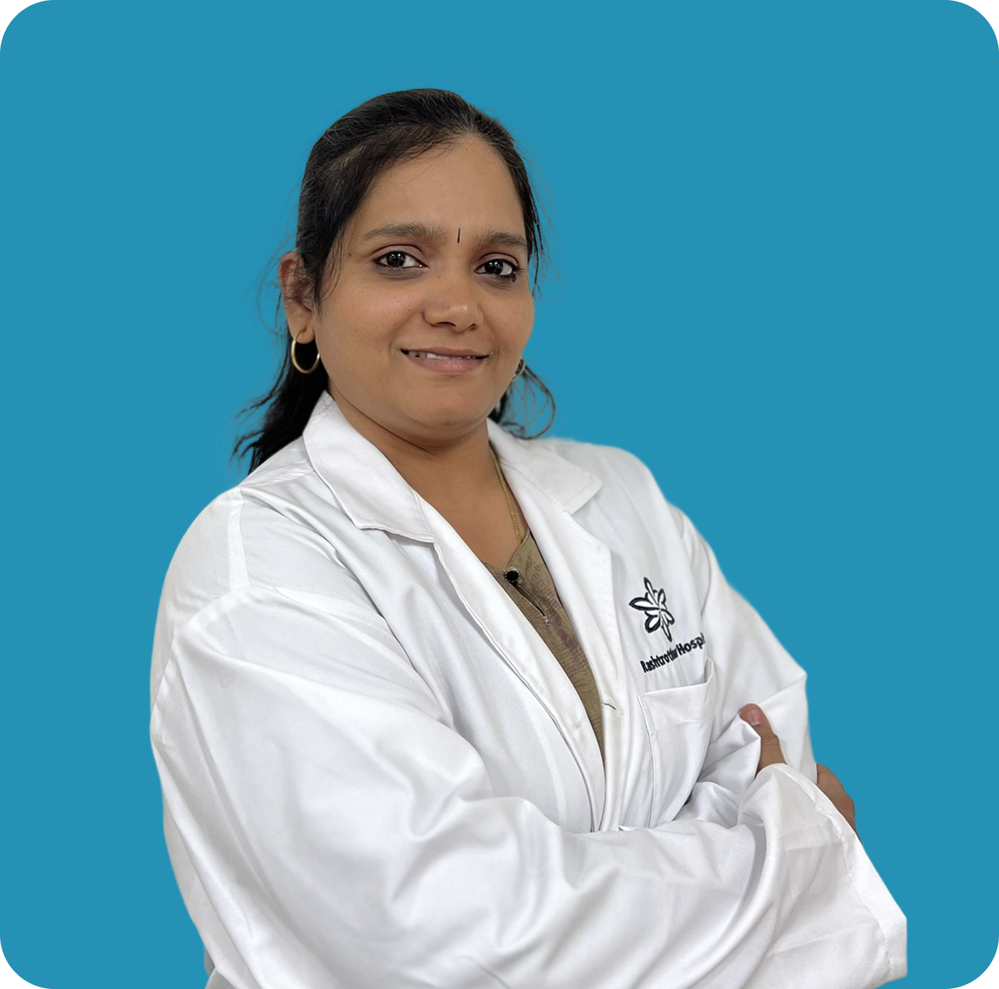

Dr. H. S Venkatesh
BSc, BAMS, FAHO, FAGE
Ayurveda Specialist
Agnivesha Institute Of Ayurveda
Years of Experience: 25

Dr. Sapna S
MD (Ayu) in Rasa Shastra and Bhaishajya Kalpana, PG Dip (Yoga) Diploma in Medical Astrology
Ayurveda Specialist
Agnivesha Institute Of Ayurveda
Years of Experience: 20

Dr. Kavya N
BAMS, MD (Ay), (PhD)
Ayurveda
Years of Experience: 15

Dr. Rohith K R
BAMS
Resident Medical Officer
Agnivesha Institute Of Ayurveda
Years of Experience: 3
Dr. Kishan G. N
Ayurveda (Panchakarma and Ayurvedic Medicine)
Years of Experience: 14+